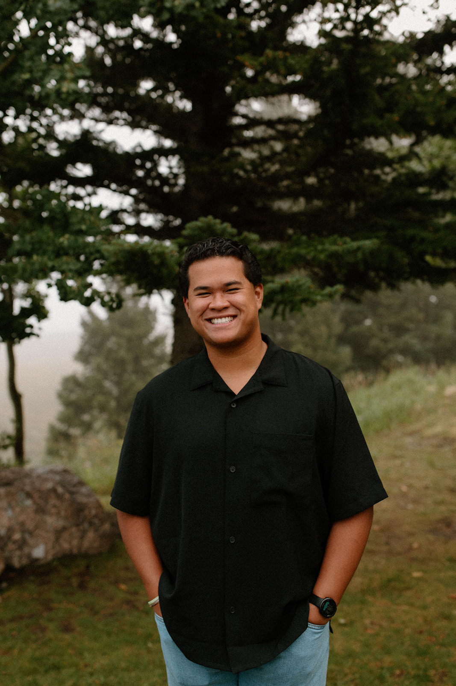
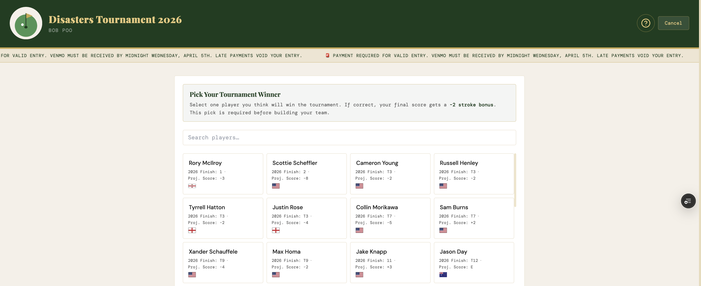
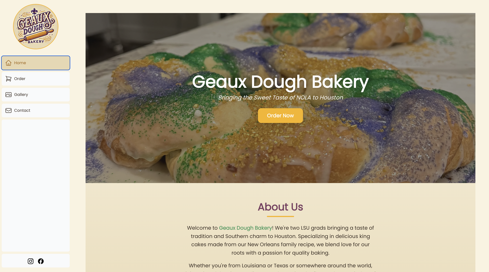
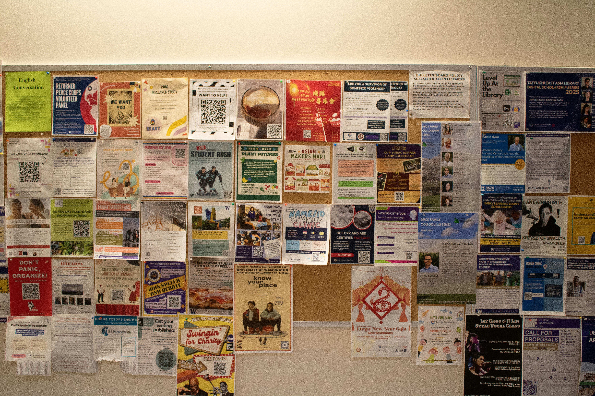

About
Currently @ Driven Telematics as a Founding Engineer, designing and building mobile-to-cloud solutions that tackle exciting challenges in the Telematics space!

Believer. Builder. Husband. Friend.
I’m first a follower of Jesus, second a husband, and third a friend to all. My faith in Jesus is the foundation of how I try to live, work, and love people. I’m passionate about serving others, and I’m especially grateful to serve with Young Life Capernaum alongside my wife, where we get the opportunity to share the love of Jesus with teens with disabilities. Capernaum has taught me a lot about the kind of love I want to have for people - joyful, unconditional, accepting, forgiving, and genuinely interested in others.
I’ve also learned that I’m a builder at heart. I love sitting at the intersection of dreaming about what could be and figuring out how to make it real. Software engineering happens to be one of the avenues I’ve been given to do that. I love taking an ambiguous problem, figuring out what actually matters to people, dreaming up a solution, and then doing the work to bring it to life. Give me the 10% and I’ll figure out the other 90%.
What excites me most isn't necessarily the code itself. It's the people, the problems, and the possibility. I love thinking about how someone will actually experience something I build, finding a better way to do things, and working alongside people I trust to turn an idea into something real. Long term, I don't know exactly where that will take me and I'm genuinely okay with that. I’d love to lead people, cast vision, teach what I’ve learned, solve meaningful problems, and maybe someday build something of my own. Wherever I end up, I want there to be people to care about and something worth building.
Outside of work, I’m usually doing something with people I love. My wife and I love traveling, taking walks, sitting by the pool, serving together, and laughing a TON. I love lifting weights, playing and watching sports, cooking, and playing my guitar. I love a night of spontaenous fun, a delicious meal, a nice walk, and conversations with good people!
At the end of the day, I’m pretty simple: I love Jesus, I love people, and I love building things. I’m excited to see where God takes me next.
- Company: Driven Telematics
- Role: Founding Engineer
- School: Texas A&M University
- Degree: B.S. Computer Engineering — May 2023
- Location: Houston, TX, USA
- Email: reyokvianto36@gmail.com
- Website: https://reyokvianto.github.io/
Skills
Languages, cloud infrastructure, and frameworks I use to ship production web, mobile, and backend systems.
Experience
I focus on building scalable web & mobile applications and cloud infrastructure that drive business results and enhance user experiences. I’ve had the privilege of working with Driven Telematics, Credera, Chick-fil-A, Inc., and JPMorgan Chase & Co.
Summary
Rey Okvianto
Founding Engineer and full-stack builder specializing in cloud platforms, mobile SDKs, and product engineering from idea through launch.
- Houston, TX
- 832-444-7335
- reyokvianto36@gmail.com
- linkedin.com/in/rey-okvianto
- reyokvianto.github.io
Education
B.S. Computer Engineering
May 2023
Texas A&M University, College Station, TX
Minor in Mathematics & Cybersecurity
Professional Experience
Founding Engineer
Oct 2024 – Present
Driven Telematics, Houston, TX
- Led full-cycle modernization of a legacy Laravel/PHP/Angular/MariaDB system into a scalable mobile-to-cloud telematics platform, owning architecture, infrastructure, and technical direction from inception.
- Built native iOS (Swift) and Android (Kotlin) SDKs for real-time driving-behavior and distraction-event detection from GPS/accelerometer/gyroscope sensor data, achieving 93% trip detection/attribution accuracy and 90% event-detection accuracy.
- Redesigned the trip-processing pipeline into an async, parallelized architecture (SQS worker pool, concurrent event detection, Redis caching), cutting redundant geodata API calls to near-zero and reducing repeat-lookup latency by up to ~800x on cache hits.
- Re-architected a manually provisioned EC2/RDS fleet into a codified, containerized AWS backend (FastAPI, ECS Fargate, ECR, SQS, DynamoDB, Terraform), cutting infrastructure cost ~87.5% while enabling full-environment provisioning in under 15 minutes.
- Architected and shipped an AWS-based Motor Vehicle Record exchange platform; led requirements gathering and presented the platform to enterprise carriers.
Technology Consultant
Aug 2023 – Oct 2024
Credera, Houston, TX
- Architected and delivered a B2B gym membership application on a serverless AWS stack (Amplify, API Gateway, Lambda, DynamoDB, Cognito, AppSync, S3) with a TypeScript/React frontend, increasing conversion rate by 16% and reducing time-to-market to 4 months.
- Managed two concurrent client accounts, resolving 50+ bugs on a legacy Angular/PHP application within 6 months while leading new feature development on the B2B application.
- Delivered a technology strategy roadmap and engineering backlog for an enterprise medical device company, translating stakeholder requirements into a phased plan to adopt AI-assisted tools.
Software Engineer I (Contract)
Jan 2023 – July 2023
Chick-fil-A, Inc., Remote
- Developed responsive interfaces for the Restaurant Development team (React.js, TypeScript, IBM TRIRIGA), reducing store data update time by ~80% and eliminating rework from the legacy system's lack of input-error recovery.
Software Engineer Intern
June 2022 – August 2022
JPMorgan Chase & Co., Houston, TX
- Built a full-stack web app for client data management and analytics in Corporate Investment Banking using Spring Boot, React.js, Node.js/Express, and DynamoDB, with over 95% test coverage.
- Led weekly design reviews and stakeholder communication, translating requirements into proposals and earning a top-rated intern performance review.
Portfolio
Selected product, freelance, and hackathon work — from fantasy sports and bakery ordering to GenAI communication tools and campus builds.
- All
- App
- Web
- Hackathon

Custom Masters Leaderboard
Full-stack fantasy golf platform with a scoring engine that handles missed cuts, withdrawals, and ties — onboarded 50 users in the first week.

Geaux Dough Ordering Platform
Next.js + Firebase + Vercel ordering system that grew seasonal volume from ~1 order/week to 23 orders/day.

CommuniCanvas
React Native app using GenAI image boards to help non-verbal users and people with limited language skills express themselves.

BirthdayBuddy
App that helps users remember friends and family birthdays and send thoughtful wishes on time.

Chick-fil-A Slack Chatbot
Hackathon chatbot (Python, API Gateway, Lambda) that converts English text into Chick-fil-A cow language inside Slack.
PartyVizion
Raspberry Pi, camera, and stepper motor system that adapts music to how many people are in a room. 3rd place of 200 teams at HowdyHack.
E.M.I.L.Y. Rescue Camera
Senior Capstone Design project: Portable, attachable, retractable camera with remote control for the E.M.I.L.Y. rescue robot — battery-powered with radio-based communication for disaster navigation.
Services
Ways I partner with founders, product teams, and businesses to turn ideas into shipped software.
Full-Stack Application Development
Building production web and mobile applications from frontend through backend and infrastructure
API Design & Development
Designing REST APIs, integrations, data models, authentication, and developer-facing interfaces
Software Architecture & Technical Strategy
Turning business requirements into scalable technical architectures and making decisions around infrastructure, integrations, data, and system design
Product Engineering
Taking products from idea → requirements → architecture → implementation → launch, with an emphasis on solving the actual business problem rather than just writing code
Technical Product Management
Translating business/customer needs into technical requirements, prioritizing features, coordinating development, and driving projects from concept to completion
AI-Assisted Software Development
Using modern AI development tools to accelerate implementation, prototyping, debugging, and iteration while maintaining ownership of architecture, code quality, and technical decisions
From the People I've Worked With
What People Say
Contact
Based in Houston — open to collaborating on products, platforms, and ambitious builds. Reach out by email or LinkedIn.
Let's connect
Prefer email or LinkedIn? Use the links below — I’ll get back to you as soon as I can.